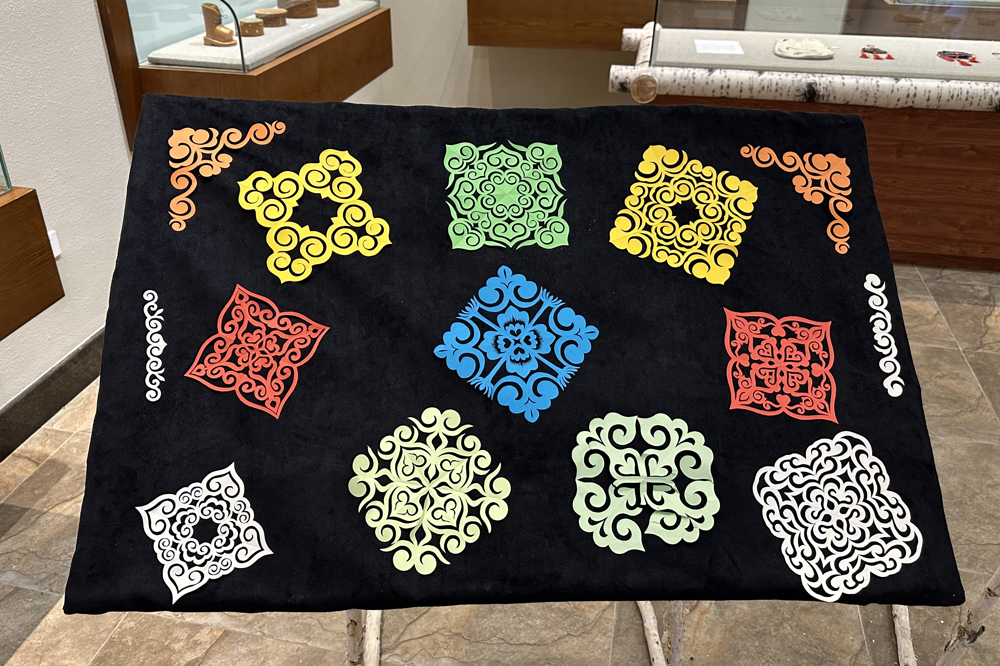
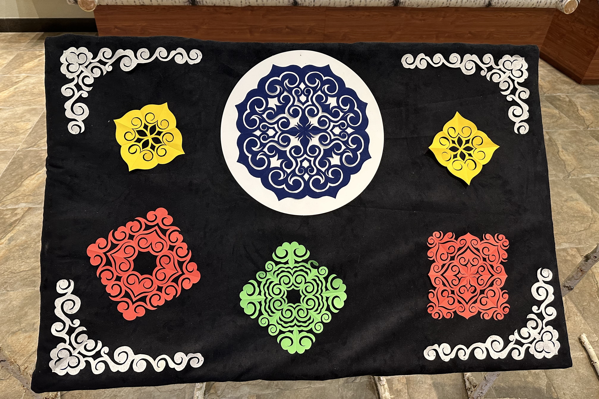
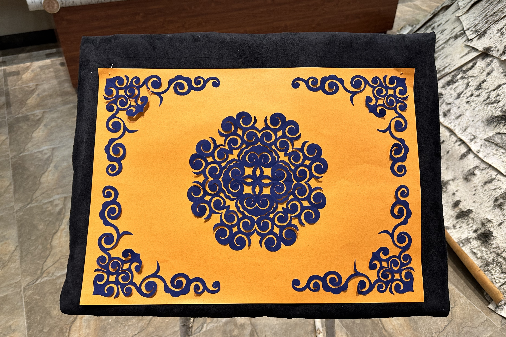
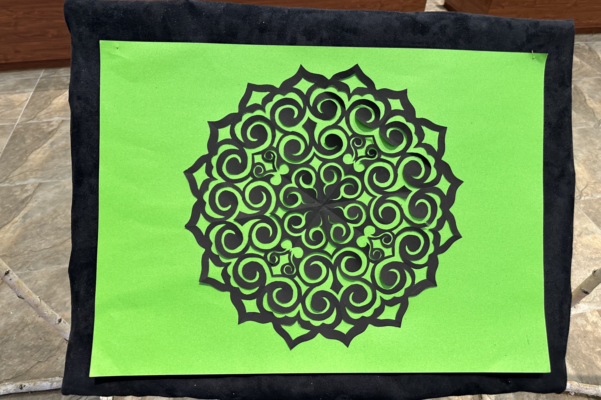

鄂伦春族剪纸，内容多以大自然花草树木、动物形象及劳动工具为主，触景生情，在剪纸人心中形成图案，直接剪裁而成。剪纸作品多数用在服饰和桦皮、兽皮制品上。表现形式繁简错落。具有古老浑厚，纯朴粗犷的北方狩猎民族风格。2009年被列入黑龙江第二批省级非物质文化遗产。
鄂伦春的剪纸艺术，早期用薄桦树皮和熟好的兽皮剪，后来用纸剪。鄂伦春民族没有自己的文字，剪纸就如同文字符号，每幅剪纸都有着不同的内容，表现生产生活、宗教信仰、婚丧嫁娶等。有人物、动物植物及自然景物；有象征鄂伦春崇拜的神灵，如天神、山神、火神等。这些剪纸不仅可以用来装点生活，更表现了鄂伦春人的内心世界和精神寄托。
鄂伦春族世代游猎在大小兴安岭的密林中，擅长在桦树皮上雕刻各种剪纸图案，妇女们多用动物小腿骨制成的刻刀，在桦皮制的桶、篓、碗、箱等器具上刻出多种多样的花纹图案，涂上颜色，结婚时由女子带到婆家。在桦树皮制品上雕刻的花纹和颜色都有一定的含义，如“珠勒都很”花纹象征夫妻永不分离，红色象征姑娘之喜，黄色象征男人之喜。鄂伦春族的剪桦皮、剪抱皮、剪纸作品反映了鄂伦春人的生活习俗、萨满教文化、狩猎生产、衣食住行等各个方面。